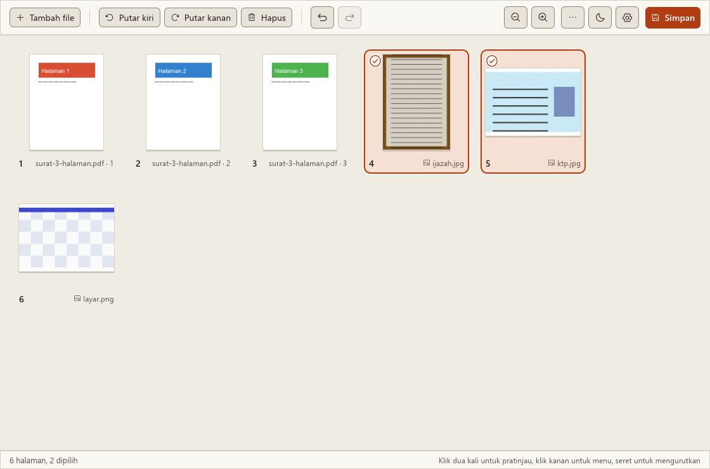
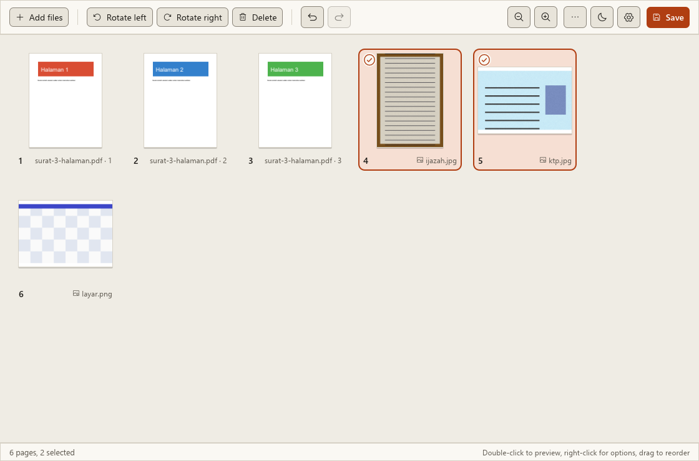
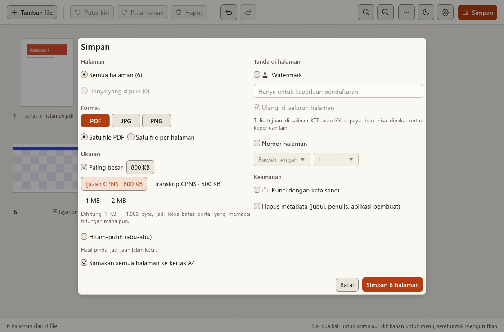
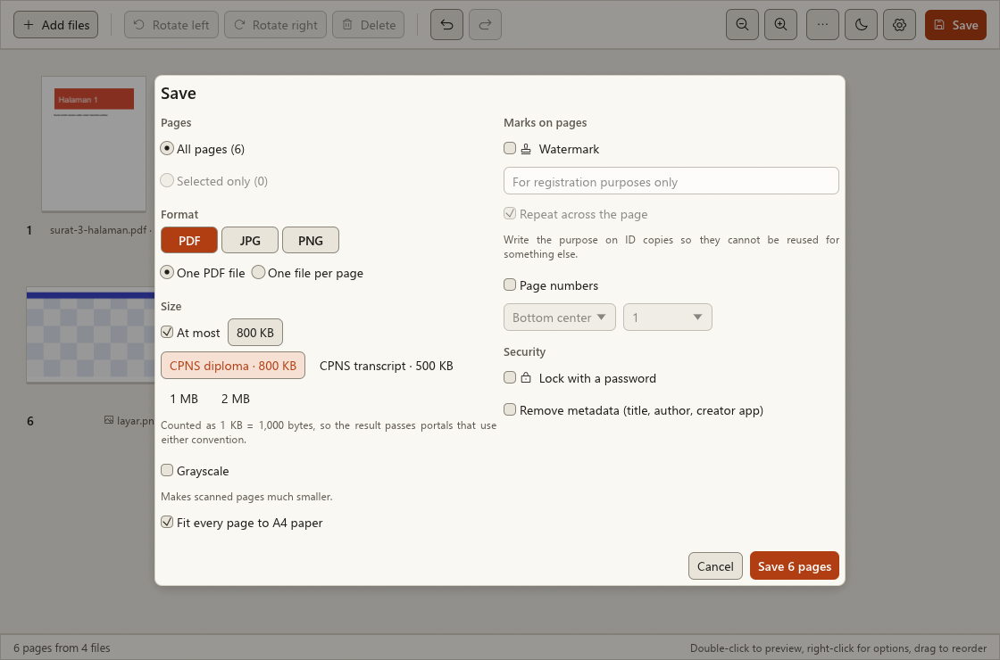
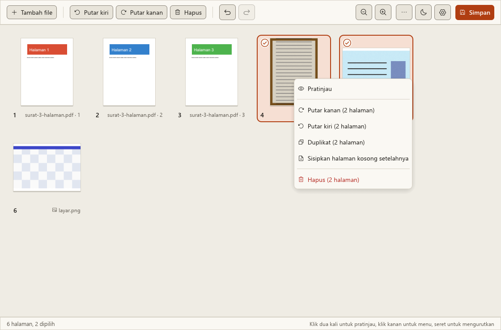
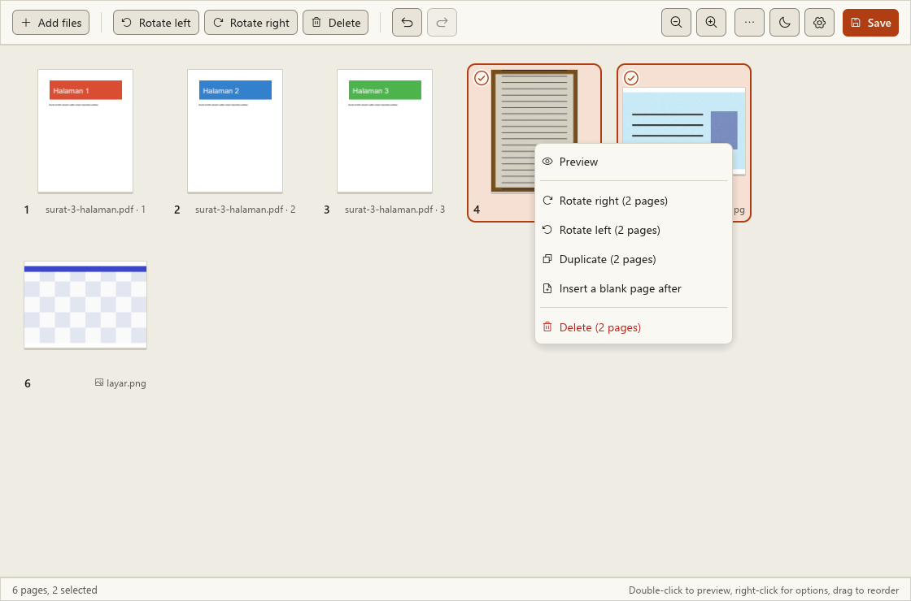
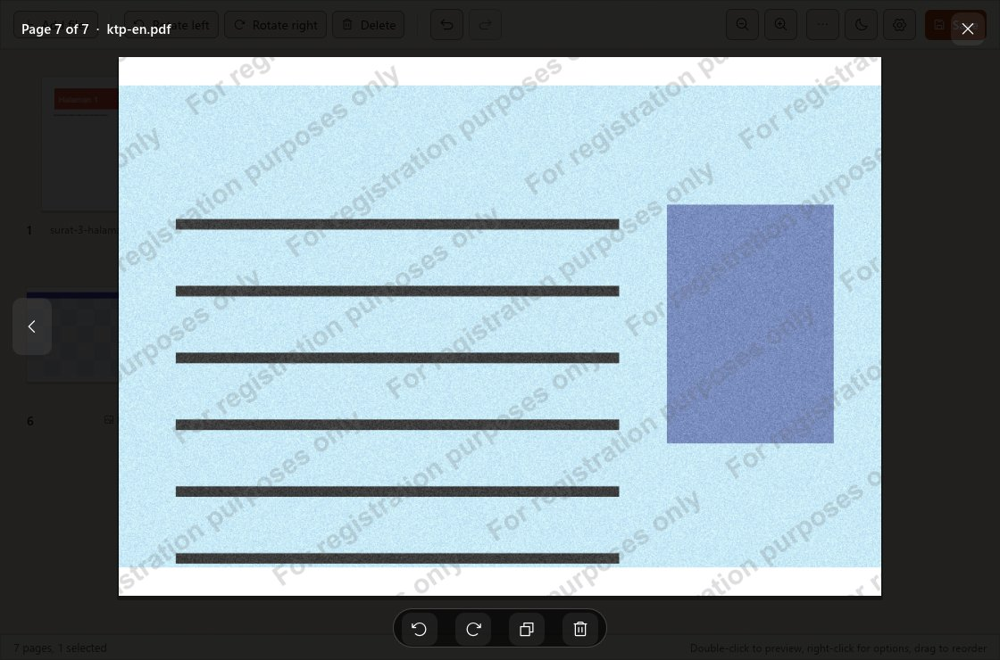

Kompres PDF sampai muat batas unggahan, tanpa mengunggahnya ke mana pun. Shrink a PDF until it fits the upload limit, without uploading it anywhere.
Lembar menggabung, mengurutkan, dan memutar halaman PDF dan foto, lalu menyimpannya di bawah ukuran yang Anda tentukan, misalnya 800 KB untuk ijazah CPNS. Gratis untuk Windows dan berjalan tanpa internet. Lembar merges, reorders, and rotates PDF pages and photos, then saves them under the size you set, such as 800 KB for a CPNS diploma. Free for Windows, and it works offline.


Tulis batasnya. Lembar mencari kompresi paling ringan yang masih muat.Type the limit. Lembar finds the lightest compression that still fits.
Lembar mencoba beberapa tingkat resolusi dan mutu gambar, lalu memilih tingkat paling ringan yang hasilnya di bawah batas. Bila dokumen sudah cukup kecil, gambarnya tidak disentuh sama sekali. Hasil selalu PDF versi 1.7.Lembar tries several levels of image resolution and quality, then picks the lightest one that lands under the limit. If the document is already small enough, its images are left untouched. The result is always PDF version 1.7.
| PresetPreset | Format | BatasLimit | Ikut diaturAlso set |
|---|---|---|---|
| Ijazah CPNSCPNS diploma | 800 KB | Kertas A4A4 paper | |
| Transkrip CPNSCPNS transcript | 500 KB | Kertas A4A4 paper | |
| KTP, pas foto, swafoto CPNSCPNS ID card, photo, selfie | JPG | 200 KB | Resolusi asli fotoOriginal photo resolution |
| BebasYour own | PDF, JPG | 20 KB sampai 200 MB20 KB to 200 MB |
Batas dihitung 1 KB = 1.000 byte, lebih ketat daripada 1.024, jadi hasilnya lolos portal yang memakai hitungan mana pun.Limits are counted as 1 KB = 1,000 bytes, stricter than 1,024, so the result passes portals that use either convention.
Contoh dari pengujian: enam halaman, termasuk foto ijazah 5,4 MB dan foto KTP 1 MB, menjadi satu PDF 745 KB dengan preset 800 KB.An example from testing: six pages, including a 5.4 MB diploma photo and a 1 MB ID card photo, became one 745 KB PDF with the 800 KB preset.
Preset CPNS mengikuti ketentuan SSCASN 2024. Periksa pengumuman terbaru sebelum mengunggah.The CPNS presets follow the 2024 SSCASN rules. Check the latest announcement before you upload.


Halaman dari banyak file, disusun di satu tempat.Pages from many files, arranged in one place.
Seret PDF, foto dari ponsel, atau satu folder sekaligus ke jendela. Setiap halaman muncul sebagai gambar kecil yang bisa diurutkan.Drop PDFs, phone photos, or a whole folder onto the window. Every page shows up as a thumbnail you can reorder.
- Seret untuk memindah satu atau beberapa halaman sekaligus.Drag to move one page or several at once.
- Putar, hapus, duplikat, atau sisipkan halaman kosong dari menu klik kanan.Rotate, delete, duplicate, or insert a blank page from the right-click menu.
- Klik dua kali untuk melihat halaman sebesar jendela sebelum disimpan.Double-click to see a page at window size before saving.
- Foto menjadi halaman A4, tegak atau mendatar mengikuti fotonya. JPEG yang tidak perlu diputar masuk apa adanya, tanpa turun mutu.Photos become A4 pages, portrait or landscape to match. JPEGs that need no rotation go in as they are, without losing quality.
- Simpan sebagai satu PDF, satu PDF per halaman, atau JPG dan PNG per halaman.Save as one PDF, one PDF per page, or JPG and PNG per page.
- Urungkan sampai 100 langkah.Undo up to 100 steps.



Salinan KTP yang tidak bisa dipakai untuk keperluan lain.ID copies that cannot be reused for something else.
Tulis tujuannya di setiap halaman. Watermark miring bisa diulang di seluruh halaman supaya sulit dipotong.Write the purpose on every page. The slanted watermark can repeat across the whole page so it is hard to crop out.
- Nomor halaman: 1, 1 / 10, atau "Halaman 1 dari 10", di bawah atau di atas.Page numbers: 1, 1 / 10, or "Page 1 of 10", at the bottom or the top.
- Kunci PDF dengan kata sandi (AES-256). Lembar tidak menyimpan kata sandinya.Lock the PDF with a password (AES-256). Lembar does not store the password.
- Hapus metadata seperti nama penulis dan aplikasi pembuat.Remove metadata such as the author name and the app that made the file.
- Lembar memberi tahu bila sebuah PDF bertanda tangan digital atau e-meterai, karena menyimpannya ulang membatalkan tanda tangan itu.Lembar tells you when a PDF carries a digital signature or e-stamp, because saving it again invalidates that signature.
Dokumen Anda tetap di komputer Anda.Your documents stay on your computer.
Lembar tidak punya server dokumen, akun, atau iklan. Semua penggabungan dan kompresi terjadi di komputer Anda, juga saat tidak ada internet.Lembar has no document server, no account, and no ads. All merging and compressing happens on your computer, even with no internet connection.
Satu-satunya sambungan keluar adalah pemeriksaan pembaruan sekali sehari ke situs ini, dan bisa dimatikan di Pengaturan. Laporan galat hanya disimpan di komputer Anda. Rinciannya ada di kebijakan privasi.The only outgoing connection is a once-a-day update check against this site, and you can turn it off in Settings. Error reports are stored only on your computer. The details are in the privacy policy.
Bisa dipakai dengan keyboard.Works from the keyboard.
- Ctrl O
- Tambah fileAdd files
- Ctrl S
- SimpanSave
- Ctrl A
- Pilih semua halamanSelect all pages
- Ctrl R
- Putar kananRotate right
- Ctrl Shift R
- Putar kiriRotate left
- Ctrl D
- Duplikat halaman terpilihDuplicate selected pages
- Delete
- Hapus halaman terpilihDelete selected pages
- Ctrl Z
- UrungkanUndo
- Ctrl Y
- UlangiRedo
- Spasi
- Pratinjau halaman terpilih; panah kiri dan kanan untuk berpindahPreview the selected page; left and right arrows to move
- Ctrl +
- Perbesar gambar halamanLarger thumbnails
- Ctrl -
- Perkecil gambar halamanSmaller thumbnails
Yang belum bisa dilakukan LembarWhat Lembar can't do yet
- Membaca teks dari hasil pindai (OCR). Teks di foto belum bisa dicari atau disalin.Read text from scans (OCR). Text in photos cannot be searched or copied yet.
- Mengedit tulisan di dalam PDF, atau mengubah Word dan Excel menjadi PDF.Edit the text inside a PDF, or turn Word and Excel files into PDF.
- Membubuhkan tanda tangan digital atau e-meterai.Apply digital signatures or e-stamps.
- Mengecilkan PDF yang isinya hampir semua teks dan gambar vektor. Lembar mengompres gambar di dalam PDF, jadi dokumen seperti itu hanya mengecil sedikit.Shrink PDFs that are almost all text and vector drawings. Lembar compresses the images inside a PDF, so such documents only get a little smaller.
- Installer belum bertanda tangan kode. Windows SmartScreen bisa menampilkan "Windows protected your PC"; pilih "More info", lalu "Run anyway". Bandingkan SHA-256 di bawah bila ragu.The installer is not code-signed yet. Windows SmartScreen may show "Windows protected your PC"; choose "More info", then "Run anyway". Compare the SHA-256 below if in doubt.
- Antivirus bisa menahan installer yang masih baru ini. Saat diuji, Avast menghapus installer yang baru diunduh dan baru membiarkannya setelah diizinkan dari aplikasi Avast. Bila itu terjadi, pulihkan dan izinkan file itu dari aplikasi antivirus Anda, lalu unduh ulang bila filenya sudah terhapus.Antivirus software may hold back this new installer. In testing, Avast deleted the freshly downloaded installer and only let it run after it was allowed in the Avast app. If that happens, restore and allow the file from your antivirus app, and download it again if it was already deleted.
- Berjalan di macOS atau Linux. Lembar hanya untuk Windows 10 dan 11.Run on macOS or Linux. Lembar is for Windows 10 and 11 only.
Unduh Lembar 0.2.0Download Lembar 0.2.0
Gratis untuk pemakaian pribadi maupun kantor. Windows 10 atau 11, 64-bit. Dipasang untuk pengguna ini tanpa hak administrator.Free for personal and office use. Windows 10 or 11, 64-bit. Installs for the current user without administrator rights.
7ac510f067beecd8e5505e87e3186abd3a626bb07dd81fb57f0d74153f66e33e